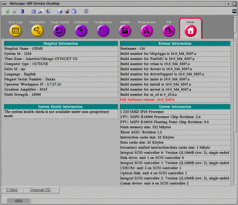
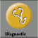

Operating Documentation
Direction 5133315-3, Rev# 14
Signa EXCITE HD 1.5T Service Methods
Module Version 2.0, Version Date 3/7/08
Operating Documentation |
The diagnostic tests are all disk-based and can be selected/run only when Signa 10.X software is running. These tests are downloaded to the MGD. Downloading is via individual 100 BaseT Ethernet links interconnecting the Host to the Application Gateway Processor (AGP), Acquisition Processing Subsystem (APS), and Scan Control Processor (SCP) in the MGD. The Image Transfer (IT) link (previously known as the BIT3 link) is not used for downloading diagnostics to the MGD. Downloading the diagnostics from the host via individual 100 BaseT Ethernet links to the APS, SCP, and AGP permits the diagnostics to run in the event that the PCI bridge or one of the processors in the MGD has failed. While this does not solve all the problems that result when trying to run diagnostics after a major failure of an MGD component(s), it does allow BLD diagnostics to be executed and offers an alternative path for reporting results to the host.
Board level tests may be initiated individually. Click the (Service Tools) icon to open the Service Desktop Manager. On the Service Desktop Manager, if the Common Service Desktop (CSD) is not already displayed on the screen, select [ServiceBrowser] and wait for the Common Service Desktop to appear. After a few seconds a window like that shown in Illustration 1 will be displayed.
Illustration 1: MR COMMON SERVICE DESKTOP BROWSER

Click the 
Illustration 2: DIAGNOSTICS TESTS VISIBLE ON LEFT OF DIAGS MAIN MENU